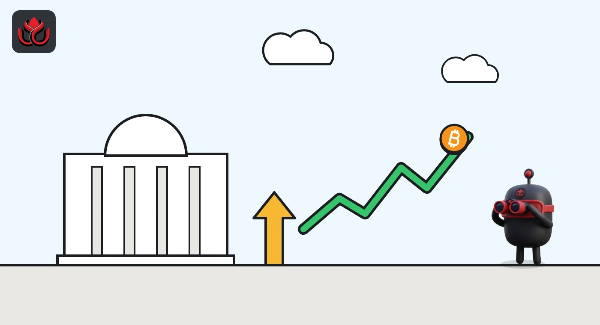
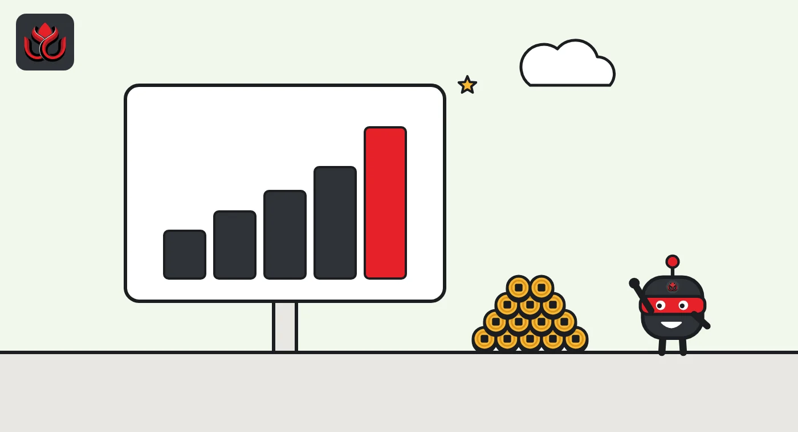

Bitcoin went from $75,600 to $87,000 in a week after the Fed hiked. ETFs did the lifting
The Fed raised rates on September 16, and bitcoin rallied instead of falling. Within a week it hit its highest level since late January as US spot ETFs took in almost $3 billion. By November 1 it was back near where it started.
Key points
- Bitcoin traded near $75,600 on the day of the Fed's September 16, 2026, hike and reached about $87,160 on September 23, per CoinGecko.
- US spot bitcoin ETFs took in $2.98 billion over seven sessions from September 17 to 25, including $999 million on September 21.
- Bitcoin ended September up about 6%, then slid back to about $77,500 by November 1 as ETF flows turned negative.
A rate hike, then a rally
Bitcoin rose, not fell, after the US Federal Reserve raised interest rates. The Fed lifted its policy rate by a quarter point on September 16, 2026, to a range of 3.75% to 4%. The decision was unanimous, 12 votes to none, the Fed said in a statement released at 2:00 p.m. ET.
Bitcoin traded around $75,600 on the day of the decision, according to CoinGecko. Two days later it was above $81,000. On September 21 it pushed past $86,000, and on September 23 it reached about $87,160 in CoinGecko's hourly data. That was the highest level since the last days of January 2026.
That is not the usual pattern. Higher rates tend to weigh on assets that pay no interest, such as bitcoin. This hike, though, had been well flagged, and buyers stepped in once the decision was out of the way.
Who was buying
The clearest source of demand was US spot bitcoin exchange-traded funds (ETFs), which hold real bitcoin on behalf of their shareholders. They recorded net inflows of $433 million on Friday, September 18, and $999 million on Monday, September 21, according to Farside Investors. Over the seven trading sessions from September 17 to 25, net inflows added up to $2.98 billion.
That streak followed a weak start to the month. The funds lost $450 million on September 15 and $296 million on September 16, the day of the Fed decision. The money that left before the hike came back, and then more arrived.
Corporate buyers were also active. Strategy, the largest listed holder of bitcoin, said in a filing with the SEC that it held 847,666 BTC on September 30, 2026. Its average cost was $75,436.60 per coin, almost exactly where the price stood on the day of the Fed hike.

The price path
Bitcoin through the second half of September, from CoinGecko's hourly prices (UTC).
Bitcoin in late September 2026
US$
Source: CoinGecko hourly data; flows from Farside Investors
How September ended
Bitcoin did not hold the top. It eased back in the final week of the month and finished September near $83,600. Against about $78,550 at the start of the month, that was a gain of roughly 6%, by our own arithmetic on CoinGecko data. It was a solid month but not an exceptional one: August had added about 25% and April about 12% on the same measure.
Bitcoin also remained below where it started the year. It opened 2026 near $87,600, so the September close was still about 5% short of breaking even for the year. The record of $126,080, set on October 6, 2025, according to CoinGecko, was about a third higher.
ETF flows slowed as the month closed. Farside's data show $31 million of inflows on September 28, $66 million on September 29 and $149 million of outflows on September 30. Across the whole of September, net inflows came to about $2.65 billion, by our sum of Farside's daily figures.
The quarter delivered a large paper gain for Strategy. The company estimated a $20.91 billion gain on its digital assets for the three months through September 30, in its 8-K filing. It stressed that the figure was prepared by management and had not been audited or reviewed by its auditor, KPMG.

Then it faded
The buying slowed in early October. Strategy said it bought no bitcoin between September 28 and 30. Between October 1 and 4 it bought 334 BTC for $28.7 million, at an average price of $85,838.80, according to the same filing. Of that, $15.7 million came from selling 92,894 shares of its own stock and $13.0 million from its US dollar cash. Its holdings reached 848,000 BTC, bought for $63.97 billion in total. The company also reported a separate USD Reserve of $4.88 billion.
ETF flows stayed positive in the week of September 28 to October 2, at a net $241 million on Farside's figures. The following week, October 5 to 9, they turned to net outflows of $679 million, led by a $485 million outflow on October 7.
By November 1 bitcoin was back near $77,500 on CoinGecko, close to where it had been before the Fed decision. The September rally had been real, but it did not last.
Timeline
Spot bitcoin ETFs lose $450 million
Fed raises rates to 3.75% to 4%; bitcoin near $75,600
Spot bitcoin ETFs take in $433 million
ETF inflows of $999 million; bitcoin closes near $86,400
Bitcoin peaks near $87,160 in hourly data
Bitcoin ends the month near $83,600; Strategy holds 847,666 BTC
ETFs post $679 million of net outflows
LC Insight analysis
This section is our reading of the facts above, not a statement of fact.
- We think the September rally was mostly positioning. The hike was expected, money had left the ETFs just before it, and once the decision passed that money came back fast.
- Almost $3 billion of ETF inflows in seven sessions did most of the work. When those flows reversed in October, so did the price, a sign that spot ETF demand now sets bitcoin's direction.
- The $126,080 record is still about a third away. Getting there likely takes months of steady inflows, not one strong week.
What's next
- Daily spot bitcoin ETF flows on Farside
- Strategy's weekly purchase filings
- The next FOMC decision and any signal on further hikes
- Whether bitcoin can reclaim the $83,000 to $87,000 range it lost in October
Disclaimer. This article is based on public information and the sources listed below as of the update time shown. It is for information only and is not investment, legal or tax advice. Figures may change as companies and authorities publish new data.